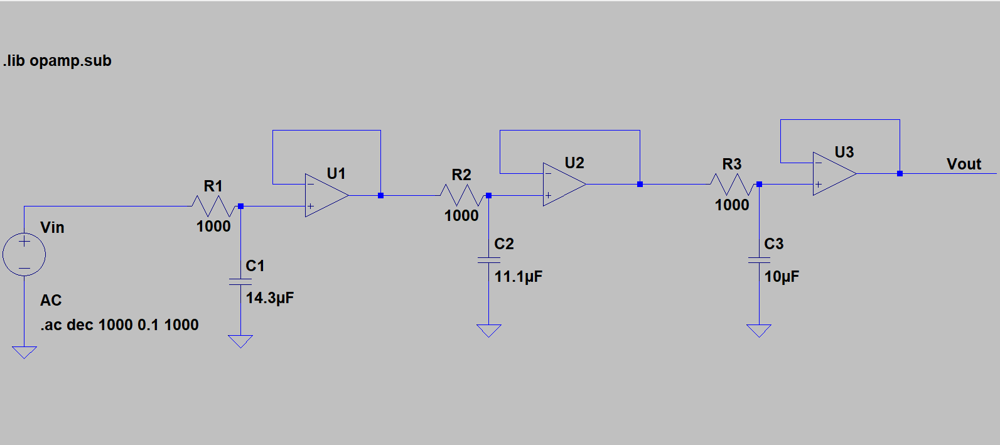
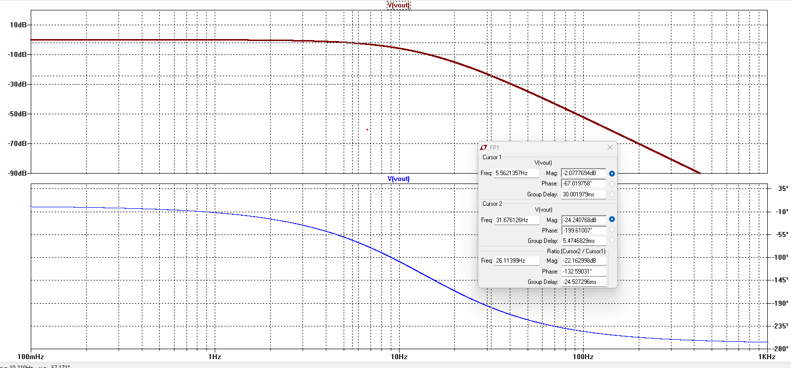

Plant Modeling + Validation
[INSERT TEXT HERE]
Plant Implementation

- Implemented poles using C = 1/(Rωp) with 𝑅 = 1𝑘Ω
- Verified stability and expected roll-off behavior
- Structured the plant as modular stages for debugging
Frequency-Domain Verification

- Checked magnitude agreement at 3 reference frequencies (low/mid/high)
- Confirmed expected roll-off and phase trend for 3 poles
- Used results to validate plant model before controller design